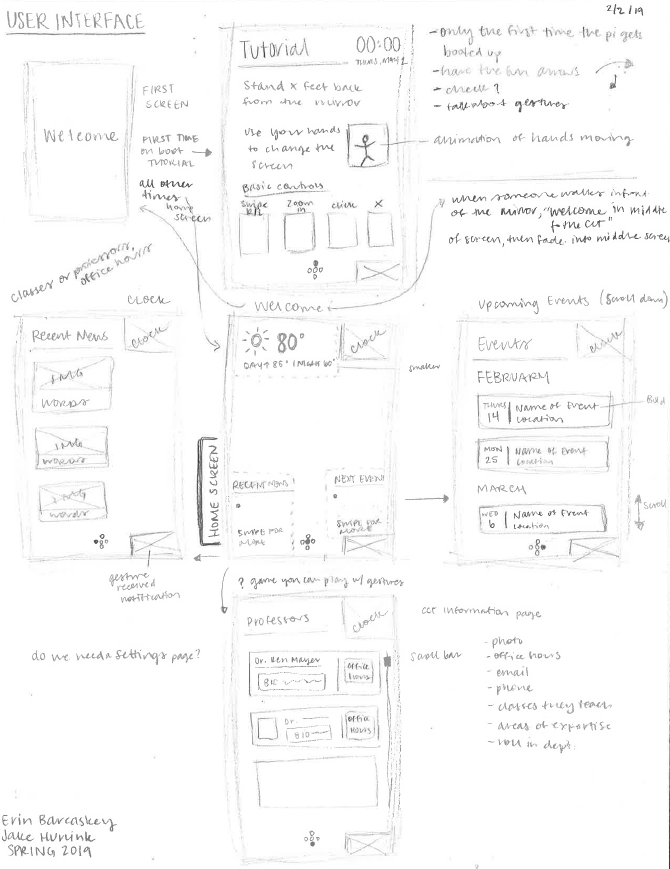

The Smart Mirror was built in my User Interface course senior year.
My teammate and I designed a smart mirror to be displayed in the
College Computing and Technology at Lipscomb University. It uses
the OpenJarvis AI for voice recognition to navigate through the
pages. We included local weather, a calendar of events, local traffic,
and a tutorial page for people using the mirror for the first time.
We used the MagicMirror codebase to get started. My teammate worked
mostly with the hardware and the voice recognition code, while I
focused more on the design and content we wanted to share on the
mirror. We brainstormed which modules would be helpful to current
students and prospective students, as we wanted the mirror to be
useful. Because we completed the mirror for our user interface
course, the user’s interaction with the design was at the forefront
of our minds when we first started sketching.
Originally, we wanted to use hand gestures to navigate through the
mirror, but due to hardware limitations, we had to pivot. We decided
to use voice recognition because it is still intuitive
for the user and does not require any expensive technology. To wake
Jarvis up, users say “Jarvis.” The hotword that lets Jarvis know the
user is saying a command is “please.” Some example commands are “Jarvis,
please show the forecast,” which shows the weather, or “Jarvis, please
show the traffic,” which shows the local traffic.
Smart Mirror Repository